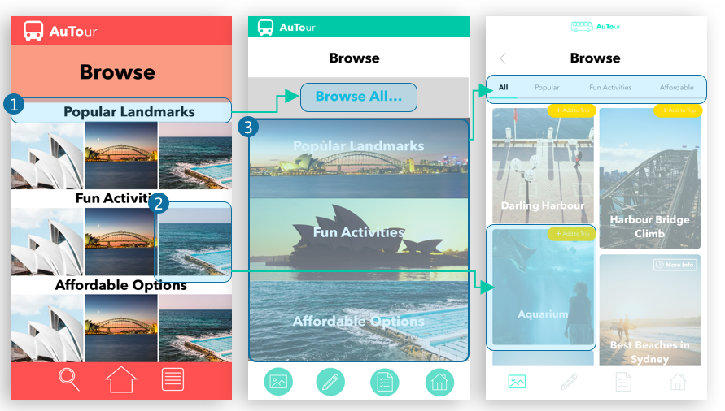

Process Journal
Context
This is a design process journal I created for a university project conducted over 12 weeks, designing an interface for an autonomous tour bus. The brief was to conceptualise the interactions required to assist people in interacting with autonomous vehicles in the future. The project team consisted of three members working collaboratively to complete research of the context area, create concepts relating to the brief and developing these concepts to create a final interactive prototype of the solution. While we worked hard on this project, difficulties arose and were overcome, all contributing to, and influencing, our final design. The following are entries about the progression of our project and the process we underwent, documented on a week-by-week basis.
Week 01
This week our group discussed the design brief and brainstormed directions we wanted to explore for our project. We wrote down all of our ideas and potential contexts and vehicles to discover the more interesting and undeveloped area that we all agreed on. We looked at contexts including education, household productivity, public streets, health, emergency services and entertainment. We also looked at different vehicles such as robots (e.g. Roomba), buses, trucks and wheelchairs. Within the contexts we saw many opportunities. These included school buses, trucks suppling goods, party buses, patient transport wheelchairs and household garbage disposal. We discarded most of them as they were already developed, too close to current products or too simple. We decided we didn’t want to explore cars as it was already being developed by large companies and that would limit our design opportunities. We realised we wanted the project to be creative and as original as possible, so we focused on lesser developed/known modes of autonomous transport.
Our group liked the ideas of the school bus and party bus the best, and so decided to focus on buses as our vehicle. We dismissed the party bus idea as we felt it was a low impact concept and would be limited in design. We instead focused on school buses and developed the concept to include a roll marking system, tracking, emergency response and communication with parents. We then brainstormed different situations to research in which this design idea would be useful including kids getting lost on excursions and falling asleep on the bus. We also understood there would be some issues with this idea, specifically child privacy laws related to tracking the students’ location. We realised that it would be difficult to obtain accurate research because we didn’t have access to this demographic.
Week 02
This week we revisited the school bus concept, however we decided to take the project in a different direction. We didn’t think there was enough opportunity in the school context and wouldn’t be as creative or enjoyable. The lack of access to the target user (school children) also greatly influenced our decision as it would impact the depth and reliability of our research later on. We still liked the idea of autonomous buses however and brainstormed different areas to implement them. We looked back at the entertainment context as one of our previous ideas were tour guide vehicles which provided information, a voting system for where to go and alerts about good photo opportunities. We developed this and came up with tour buses and decided on it as we were excited about the opportunities in this area.
After doing a stakeholder map on the tour buses we realised that it was possible for us to research this area well, especially with travellers, international students or someone who’s been overseas because tourists were the main stakeholder in this business. We began to brainstorm how to contact our target users and our objective for our primary research, developing a research invitation to use to contact potential research participants.
We decided our objective was to discover what their past experiences with tour buses has been like, what their ideas/improvements for the industry are and features they like on other transport systems or at tourist attractions. From this objective we developed interview questions broadly about interviewees experience being a tourist and on tour buses and what they thought could be improved. We then did a brainstorm of different research methods from Design, Think, Make, Break, Repeat and allocated them to try and get the largest range of data. These included observations, interviews, surveys, focus groups and scenarios.
Week 03
This week we worked on gathering primary research individually for our research reports. We had split up the methods and I had chosen interviews, observations and mind mapping. I began with a mind map to document my preconceived ideas about tour buses, the users and the users’ purpose. I used colour and icons to separate and combine different strains of ideas. My main insight while making it was the difference between private and public/hop-on hop-off buses and their uses, i.e. private buses were usually longer tours with groups, and some of them may chat or sleep while travelling long distances. In contrast, public were meant for short term trips in which people were always paying attention and taking photos or listening to audio. This gave me ideas about future contexts for our project, depending on the type of bus we chose.
I did observations at both Bondi Beach on the weekend and at Central mid-week after uni. I took photos and notes of peoples’ movements within the space, their emotions whilst using the service and trends among different users. I compared my research from both locations, noting similarities and differences between the data, including how many people there were, their interactions with the buses and their actions when they exited the bus. My primary insights were that most people were travelling in groups, either with friends or family, that the users gathered together for some time once they had left the bus, in order to gather their belongings and decide where to go next, and that while most users went towards the main attraction or location (i.e. either Bondi Beach or Central Station), some people went in other directions, exploring the shops or food establishments.
We realised after doing this research separately that each of us had done similar data collection, especially with interviews and observations. However, we understood that this was because it was the best source of primary data and efficient to complete. We decided this overlap was justified because it provided us with a larger data pool, including a wider demographic and more experiences. This created a more accurate representation of the information overall when we combined our research and extracted insights later on.


I also begun finding my participants and doing my interviews this week. I used the questions our group formulated in order to obtain the most relevant information for our project. I then did short interviews with them, probing beyond the initial questions depending on their answers. I recorded the interviews, so I could transcribe them later to keep the tone more conversational and keep the focus on their answers. The interviewees I chose reflected our target users, mostly young adults who have been tourists previously or used a tour service. The interviews revealed lots of interesting information.
I was most surprised by the fact that most of the subjects preferred a knowledgeable tour guide over a pre-recorded tour and were quite passionate about it. I thought that in this digital age the users would favour an app or technology over a real person, however the guide made the tour entertaining and created a memorable experience. The interviewees also confirmed what I thought about scheduling which was that it was too rigid and structured. Most people preferred to have some free time or the ability to explore by themselves.
Week 04
I finished the rest of my assignment this week, doing research of existing products and services, transcribing interviews, creating personas and a storyboard and synthesising all of my data. I did further research on current and emerging technologies involved with tour buses and autonomous technology, focusing on two key examples for my research report, a popular tour bus service – Big Bus Tours – and a current autonomous bus – RAC Intellibus.
The Big Bus Tours were informative as that’s the service I did my observations of. I had done previous research before my observations, such as on the two different routes (the City and Bondi route) and bus times. Upon further research I found that they had an app already, that they collaborated with attractions including the zoo (for day passes), and that the Hop-on Hop-off service only provided the bus/route and audio, allowing users freedom to explore individually. This related to information I had learned from my interviews and observations, however not many people had used this service themselves. The system was very different from the group, structured tours most people had experienced which furthered my research. I also discovered that autonomous buses were being tested worldwide, including the RAC Intellibus in Perth. This bus, as with most current designs, are shuttle buses with limited passengers and a smaller vehicle size. While the buses aim to reduce human error and crashes, the technology needs advancements before it’s ready to replace self-driven buses.
I created a storyboard to represent one of my persona’s potential experiences on a tour bus, based on my interviews. It highlighted positive and negative aspects of her experiences to visualise the journey and identify pain points. I synthesised this data in the form of key insights and an affinity diagram. The main user needs regarding bus tours that arose from my synthesis were flexibility, customisation and uniqueness.
Week 05
 Figure - Creating the storyboards
Figure - Creating the storyboards
This week our group combined all of our research data to find the most common trends and opportunity areas, as well as any design ideas we already had about different aspects of the buses. We came up with a list of user needs that were consistent across all of our research. These included flexibility, authenticity and personalisation. We decided to focus on implementing an interactive system in an autonomous ‘hop-on hop-off’ bus, rather than a private bus. This was because we had each done observations and other research about this company and style of bus and we saw the most interesting opportunities for design.
We then started exploring basic concepts for our next assignment. We brainstormed many concepts including an AI ‘Tour Buddy’ who is a personal tour guide; a ‘Choose-Your-Own-Adventure’ tour with suggestions and choices of location; a tour guide preference, or choice of different tours (e.g. historical or kid friendly); and following an icon’s journey around the area with different routes, and stories of their lives and journey.
 Figure - Choose your own adventure initial storyboard
Figure - Choose your own adventure initial storyboard
 Figure - Tour Buddy initial storyboard
Figure - Tour Buddy initial storyboard
We decided on two concepts. One was the ‘Choose-Your-Own-Adventure’ which we developed slightly further so users would be greeted as they entered the bus and choose locations to personalise their journey, creating a digital picture book with their adventure in it as a souvenir. The idea was to make the journey unique and personalised as we found it was a prevalent user need from our research. The second concept was the ‘Tour Buddy’ which we evolved into a personal tour guide that could interact with the individual users (each had their own ‘buddy’) and create a unique and personal experience for them.
Week 06
This week we realised the novel idea would be problematic and need developing because we didn’t want to distract users from the sights and the text heavy idea that focused on screen use. We brainstormed more concepts including an AR system on the window with information about the sights and a similar system but using a google glass in which the user can use to listen to audio, view info when looking at sights, take photos and share them. We were creating this concept to have a more seamless journey without the distraction of screens which take users’ eyes off the sights. It was aimed at loosely solving the user need of personalisation.
We also looked back at some of our existing concepts and developed them further. We especially focused on the notable icon guided tour. We developed it further, creating cards for the figures and interactive maps that guide the user on a path of the icon’s journey, giving the user information about them along the way. We created this concept to address personalisation and authenticity, making a unique and interesting experience which was memorable and enjoyable.
Week 07
This week we unfortunately realised that we had misinterpreted the brief and the concepts we had created did not relate enough to and interact with the autonomous bus. Instead we had created separate systems that – while enjoyable – could exist outside of the autonomous transport system. So, we started doing rapid brainstorming of new concepts, bouncing ideas of one another and creating more concrete solutions. We created three main concepts from this brainstorm. These included a booking and alert system for a bus, inspired by Uber and ride sharing, a day planning concept, which we visited earlier in the project and a browsing and scheduling idea. We then did basic interface sketches of the main screens of these concepts, including basic text and layout to represent our ideas.
 Figure - Brainstorming Session
Figure - Brainstorming Session
 Figure - Booking and Alert concept interface sketches
Figure - Booking and Alert concept interface sketches
The booking and alert concept allowed users to book – either immediately or scheduled for later – a tour bus from their current location/attraction, with a calculated arrival time and convenient location for pick up and included suggestions about things to do (i.e. toilets, food or shops) while they wait for the bus to arrive. It also had alerts of their approaching stops and of important notices such as crowds at the next location, with the option for the user to skip this stop if they want. While this concept was simple, it included certain key interactions with the bus which addressed the brief more directly.
The day planning concept involved users selecting from various options to create their ideal schedule. Users chose the attractions they wanted to visit, how long they wanted the tour to be, what type of food they wanted to eat, etc. The bus then created the most ideal route and schedule for them based on traffic, proximity to locations, preferences, etc. The browsing and scheduling app allowed users to browse through categories including landmarks, food and history. Then they could look at more options for landmarks, e.g. popular.
 Figure - Booking and Alert concept interface sketches
Figure - Booking and Alert concept interface sketches
While ideally we wanted to include our previous concepts, such as the choose your own adventure idea as we thought it would make the experience more unique and enjoyable for the user, we were unable to tie it into the concepts we came up with and the autonomous vehicle interaction. This meant our concepts were simple and broadly fit the user needs, but mostly didn’t create a memorable experience in relation to the tour service itself. Instead the concepts focused more broadly on creating a seamless user journey whilst using the tour bus, allowing them to have an enjoyable experience by removing certain frustrating aspects currently existing in tour services.
Week 08
This week we tested our three main concepts using paper prototypes. We created mock-ups of an iPhone and transferred our basic sketches onto them. We iterated on these initial sketches immediately once realising that the initial screens were not sufficient by themselves to communicate our ideas. We also had forgotten simple UI elements like back buttons. We added the screens in between the main screens to create a basic flow in the app. This caused us to iterate our ideas further as we realised certain elements didn’t work well. We also added a welcome screen to each concept, so users had a common intro to an app and could choose what to do next. Only one option was given for each concept, but it felt as though users had a choice to continue with the app because they tapped, e.g. ‘Plan your day’.
We conducted testing with potential users with these prototypes. We tested the concept with eight people of various backgrounds travelling as a tourist. Our paper prototypes were very low quality and included rough sketches which was sometimes hard to communicate to the test subjects, however the low-fi aspect of these prototypes allowed users to critique our idea more freely. We had a few key insights from these testing sessions which allowed us to iterate our ideas further. The first thing we realised was that the day planning and browsing/scheduling concepts were quite similar, so after a couple of rounds of testing we decided to focus solely on the day planning and booking ideas as they were stronger concepts.
We conducted testing with potential users with these prototypes. We tested the concept with eight people of various backgrounds travelling as a tourist. Our paper prototypes were very low quality and included rough sketches which was sometimes hard to communicate to the test subjects, however the low-fi aspect of these prototypes allowed users to critique our idea more freely. We had a few key insights from these testing sessions which allowed us to iterate our ideas further. The first thing we realised was that the day planning and browsing/scheduling concepts were quite similar, so after a couple of rounds of testing we decided to focus solely on the day planning and booking ideas as they were stronger concepts.
 Figure - Testing Paper Prototypes
Figure - Testing Paper Prototypes
Week 09
This week we iterated our day planning concept to fit with the feedback we received. We also decided to include successful aspects of both the browsing and booking concepts because we thought it elements of these would create a more seamless system and better flow for the app. We included a browsing system so users could peruse the options and view more information about them before choosing what to include in their plan. The alerts were also included because users liked that they were reminded when to get off the bus or given an option to avoid things like crowds in advance. We limited the page changes and to reduce the linear movement by including expanding elements, such as pictures, and drop-down menus for more options and information. The ‘plan your day’ section included activities which related to the browsing section, and option to browse for more, reducing the amount of information on the page. The time and food selections were changed to drop-down menus to also reduce clutter.
The ‘day plan’ include the option to reorder the plan, go back and add/change items and skip suggestions. It also had plus symbols to easily add suggestions to the plan, and an option to remind users about other activities for a particular location when they arrived there. This was because users said that this wouldn’t be relevant to them until they were actually there. The map was made expandable for easy viewing.
We then tested this iteration with users and got feedback for our design. We found that while they liked that we put all the different features together, the navigation was difficult because of the sections and amount of content. We decided to use this feedback in our wireframes to iterate this design further, mostly trying to make it simpler and easier to move through.
 Figure - Testing of iteration using Pop
Figure - Testing of iteration using Pop
Week 10
This week we finished our research project for assignment 2. We annotated our UI sketches and created user flows for our concepts. We created our wireframes based on our paper prototypes and testing feedback. We create a first set of wireframes incorporating this. We then tested this concept and found that while this design was simpler, navigation was still difficult between pages and there was no page to return to. We did another iteration on the idea, which included making a dashboard as a homepage, including a footer with icons for navigation and extra features like travel mode to optimise their trip. The dashboard gave users a central page for notifications, alerts and a map of their location. We then created user flows for our wireframes and put together our whole report, identifying our next steps for our concept.
.jpg) Figure - iterated wireframes with dashboard
Figure - iterated wireframes with dashboard
Week 11
This week we created our final prototype. We started from the wireframes, adding colour and images to see how it looked. We iterated a few elements in order to test some layout options. These included the browse categories page which we changed to include square boxes with icons instead of rectangles, as it laid out all the options more clearly without prioritising them. We tested these screens with users to get feedback for further iteration.
We had chosen a red and yellow colour scheme as we identified this with tours and tour services, like the Big Bus Tours, however we realised these colours were a slightly too bold and didn't give the design a sleek finish. We changed the scheme to a yellow and blue/aqua colour scheme which was calmer and more fitting of Sydney and its beaches and harbours. We chose contrasting colours to make elements stand out and be clear to the users.
From testing, we also realised that the browsing page had too much content on it with all the photos and sub-headings/categories and was confusing. We decided to simplify this and revert to an original idea of having separate pages for each sub-category (e.g. 'Popular Landmarks'), with a main browsing page for the list of these sub-categories. We had tried to simplify it into less screens, however this resulted in an excess of information and options on one page which was not user-friendly. Users also requested a 'Browse All' section, instead of just the categories, which we hadn't thought of before, but which was an important category to include so users didn't have to choose.
 Figure - Iteration of Browse screensUsers said the search icon in the footer was misleading as it led to the 'browse' page not the expected search bar. We experimented with icons and placement. Instead of search, home and list icons, representing 'browse,' 'dashboard' and 'view plan' respectively, the icons were changed to a picture, a pencil, a list and home to correspond to the icons of each category on the 'browse categories' page, in the same order, for easy navigation. Users would be introduced to the icons with their names when they initially open the app, and then be able to easily move between pages in an order that makes sense, with recognisable icons like 'edit.'
We also added a welcome page to the app to come before the 'browse categories' page, so the users could be introduced to the app without having to act right away, and then continue with a 'start day' button to make choices/use the app. We added a page for 'popular landmarks' which we created a scrolling card layout for each item, overlayed with key info, which was calculated bus the autonomous bus, including time to destination, how busy the location is and how long people tend to spend there. It also included an option to add to trip for easy flow, instead of users needing to go to edit plan to add it.
For the 'day plan', users wanted the ability to easily reorder the list, so we implemented this feature. We made the edit button clearer and removed the minuses (for removing items) and intended these to pop up when the edit button was pressed, so users wouldn't accidently edit the plan if they didn't want to. We also changed the suggestions, making the experience more seamless and aesthetic. We removed the ticks and the bulky add to plan button and created plus/cross buttons to replace them. We also added a universal plus button which was fixed when scrolling so users could easily add items to their plan without going back to 'edit plan'. We then experimented with the placement of the name and time of the items, so it was the clearest what the schedule was. We realised from our own observations that the items on the plan had no distinguishing qualities and blended together, so we added bold icons to represent and distinguish them.
 Figure - Iteration of Day Plan screens
Figure - Iteration of Day Plan screens
The plan trip page was lengthy and included repetitive elements like 'add more' which were confusing for the users. We changed tried changing this button to a plus, however this was still repetitive and so we decided to create a scrolling option for the categories 'where to go' and 'activities,' so only a few options were shown but users could scroll for more without being overwhelmed.
We finalised all the prototype screens, making sure they all fit with the aesthetic of the app and tested them to ensure they had good flow and all buttons, and necessary actions where included.
 Figure - Welcome
Figure - Welcome
 Figure - Browse Categories
Figure - Browse Categories
 Figure - Browse all
Figure - Browse all
 Figure - Popular Landmarks
Figure - Popular Landmarks
 Figure - Plan Trip
Figure - Plan Trip
 Figure - Day Plan
Figure - Day Plan
 Figure - Dashboard
Figure - Dashboard
Week 12
This week was we made the prototype screens interactive. We attempted to use both Framer and Framer X, however these apps were very slow and deleted many aspects of our prototype, making them very difficult to use. We decided to use Invision instead to cover the basic aspects of the interaction, but not all the transitions or elements, like scrolling categories, within the page. We tested this with users and ourselves to ensure the prototype had good flow and all buttons needed. This was successful, and we got a good response from users, so we did not iterate further. We then created a companion website to display the prototype, host our video walkthrough, create an advertisement of the design and show our testing and iterations.
We created our video walkthrough to showcase how our app works, its interactions and possibilities. We also chose key iterated screens and briefly explained our design choices.
 Figure - Testing of final prototype
Figure - Testing of final prototype
Overall, it was a demanding but rewarding project which pushed our group to collaborate and draw on our strengths to create a successful final prototype that appeals to user needs and our problem area.